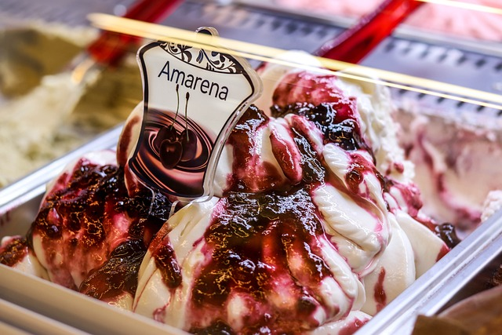

Itália
Berço da Arte, Cultura e Gastronomia
Um Destino de Encantos Eternos
A Itália é um país que exala charme, história e beleza em cada canto. Com cidades repletas de arte e cultura, vilarejos pitorescos e paisagens que vão de montanhas majestosas a praias deslumbrantes, é impossível não se apaixonar por esse destino.
Principais Atrações
Roma - A Cidade Eterna
Repleta de história, Roma abriga o Coliseu, o Fórum Romano e a Basílica de São Pedro. Não perca a Fontana di Trevi, onde você pode jogar uma moeda e fazer um pedido.

Veneza - A Cidade dos Canais
Um labirinto de canais e pontes, Veneza é famosa por seus passeios de gôndola e pela deslumbrante Praça de São Marcos. A cidade é um destino romântico incomparável.

Florença - O Berço do Renascimento
Lar de obras-primas como o Davi de Michelangelo e a Catedral de Santa Maria del Fiore, Florença é um paraíso para amantes da arte e da arquitetura.
Gastronomia Italiana
A culinária italiana é mundialmente celebrada por sua simplicidade e sabor incomparável:
Pizza Margherita: Criada em Nápoles, é um clássico italiano.

Massa: Desde espaguete à carbonara até tagliatelle à bolonhesa, a variedade é infinita.

Risoto: O risoto de açafrão de Milão é um destaque.

Gelato: O sorvete italiano é uma experiência à parte.
Vinhos: Vinhos da Toscana, como Chianti e Brunello di Montalcino, são imperdíveis.

Melhor Época para Visitar
- Primavera (Abril a Junho):
Clima agradável, ideal para explorar cidades e paisagens.
- Outono (Setembro a Novembro):
Temperaturas amenas e menor fluxo de turistas.
- Verão (Julho e Agosto):
Ótimo para curtir o litoral, mas é a alta temporada.
- Inverno (Dezembro a Fevereiro):
Menos turistas em cidades grandes e temporada de esqui nos Alpes.
Curiosidades
A Itália é o lar do maior número de Patrimônios Mundiais da UNESCO, com mais de 50 locais.
Roma tem mais fontes do que qualquer outra cidade do mundo, com mais de 1.500 espalhadas por toda a cidade.
Veneza tem mais de 400 pontes ligando suas ilhas.
Dicas Essenciais
- Evite Multidões: Visite atrações populares pela manhã cedo ou no final da tarde.
- Aproveite o Trem: O sistema ferroviário é rápido, eficiente e conecta as principais cidades.
- Seja Aventureiro na Comida: Experimente pratos regionais que vão muito além de pizza e macarrão.